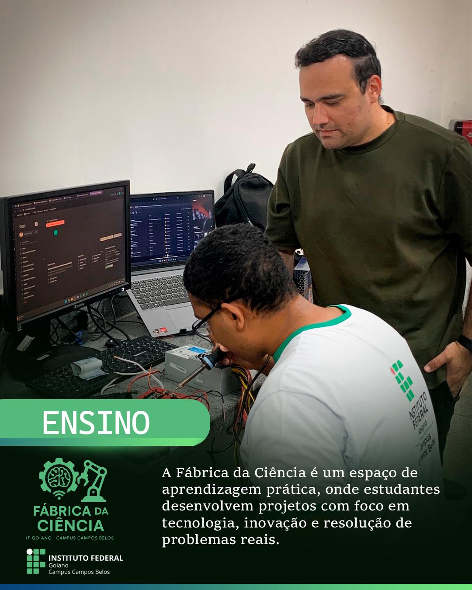
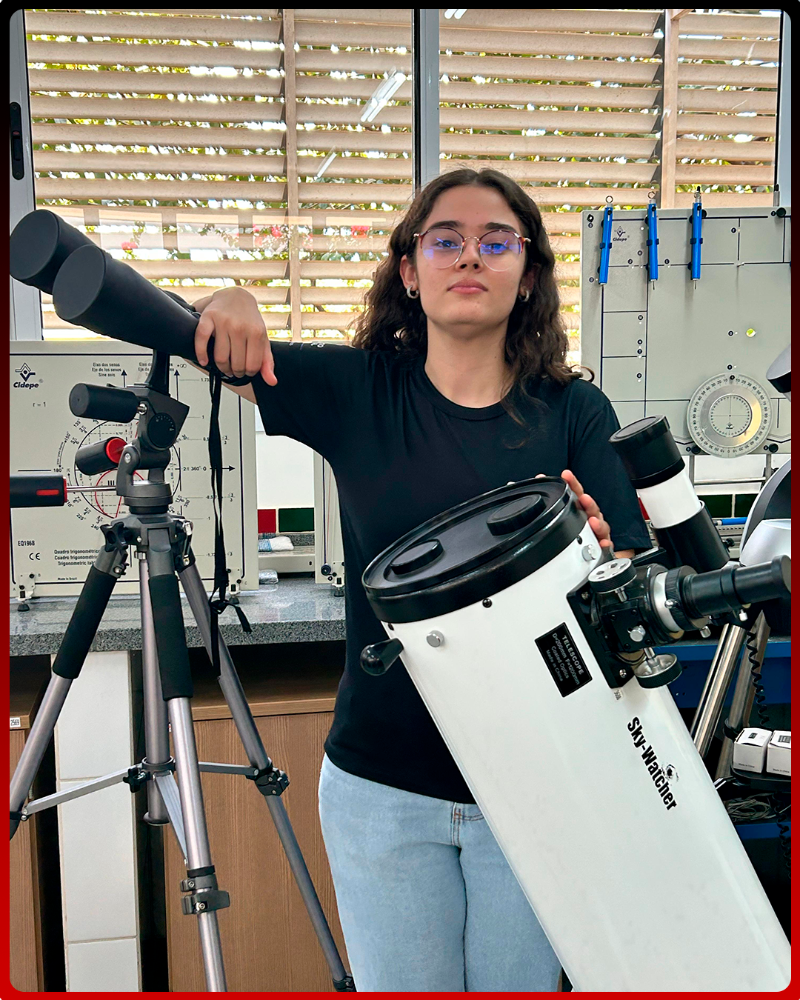

Cyber Capivaras - 2025
Processo Seletivo 2025
Resultado final e novos integrantes para fortalecer a equipe de robotica.
 Cyber Capivaras
Fazer login
Cyber Capivaras
Fazer login
IF Goiano - Campus Campos Belos
Inovacao, tecnologia e trabalho em equipe para transformar ideias em robos, projetos e solucoes reais.

Ultimas noticias

Resultado final e novos integrantes para fortalecer a equipe de robotica.

Rotina de estudos em programacao, hardware, mecanica e documentacao.

Novos testes de sensores, motores e controle para competicoes.
Sobre nos
Somos o Cyber Capivaras, time de robotica oficial do IF Goiano - Campus Campos Belos. Nascemos da paixao por tecnologia, inovacao e trabalho em equipe.
Participamos de campeonatos, desenvolvemos projetos interdisciplinares e representamos nosso campus com orgulho, sempre em busca de aprendizado e evolucao.